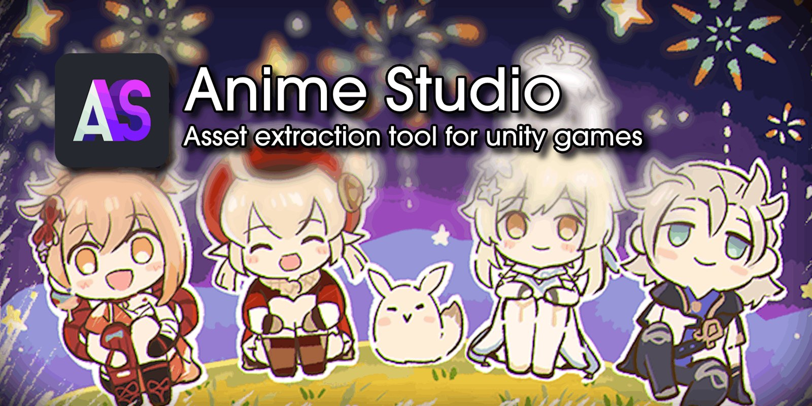

游戏里的资源，
拆开就能用。
AnimeStudio 读 Unity 游戏打好的资源包，把里面的贴图、模型、动作、音频、着色器和文本列成一张清单：先预览，再导出成 PNG、FBX、WAV 这类能直接打开的文件。
游戏把东西压进一个个包里，还上了锁。这个工具认得这些包。
它先把锁打开，再把里面的东西按类型列成清单——贴图、模型、动作、音频、着色器、文本各占一行。你从清单里挑，它把挑中的换成能直接打开的文件。
拆出来是什么
类型不同，落地的文件也不同。下面这几样，工具箱里都已经接好了。
七种东西，七种落地文件
图片、模型、声音、数据、着色器、字体、动作——先看清单，再决定拿哪些。
贴图与精灵
Texture2D 与 Sprite 转成 PNG、JPG、BMP、TGA；HDR 光照图只能在图形界面里导。
模型
网格导出 OBJ，一个文件装完顶点与面；角色和骨骼导出 FBX，带蒙皮、带动作。
声音
AudioClip 能转成 WAV，也能保留原本的压缩格式，导出前可以先试听。
文本与数据
TextAsset 直接给你 .txt；MonoBehaviour 里那些看不懂的二进制，按包里的类型树还原成 JSON，键名都在。
着色器
反编译回可读的代码，而不是一堆字节。
字体
TTF 与 OTF 原样还原，能装进系统。
动作与清单
AnimationClip 落成 .anim 文本；整次扫描还能写成一张表，下次直接查，不用重扫。
同一个内核，两个入口
图形界面适合翻，命令行适合批量
界面里一页页点开看，适合「我只想要这张立绘」；命令行一条命令跑完几百个包，适合「我要这个游戏的所有贴图」。两边用的是同一套解析代码，所以两边的毛病也一样。
同一份文件，不同的锁
包长得都一样，锁不一样。这就是为什么加载之前必须先选游戏：先选分组，再选游戏，最后选版本。
六行只是样本。完整的 75 条，连同它们分别用哪把锁，在游戏与它们的锁。
普通 Unity 游戏
你在工具里选
Unity
全部类型的资产都能直接预览。
- 你会拿到的文件
- globalgamemanagers、.assets、各种 .bundle
- 它被保护成什么样
- 没有锁
- 钥匙从哪来
- 不需要
它认得多少
这些数字是这一版的真实情况，不是宣传语。
先看这四个问题
每个新手都会撞上它们。完整的一份在疑难解答。
它会改我的游戏文件吗
会，而且是在你没被问过的情况下。如果游戏把一个大包切成几个分片放着，工具为了读它，会把分片合并成一个文件写回原目录。
所以第一次用之前，先把要处理的那几个文件复制到别的地方再打开。这是最省事的保险。
为什么必须先选游戏
因为不同游戏把包锁起来的方式不一样。选错的那一个不会友好地报错，常见结果是解出一堆读不懂的字节，看起来「全是乱码」。
选游戏是三步下拉：先选发行商分组，再选游戏，最后选版本（正式服 / 测试服）。测试版的写法常常和正式服不同，所以它们各自是一个条目。
导出的模型为什么没有贴图
因为模型和贴图在包里是两个独立的东西。导出模型时，工具只把网格、骨骼、材质名带出来；贴图要你自己在资产列表里按名字找出来另存。
界面里的 3D 预览同样不显示贴图——它只画顶点和法线，用来确认形状对不对。
需要联网吗？需要什么系统
解包、预览、导出全在本地完成，不联网。只有第一次装 .NET 运行时要联网。
只支持 64 位 Windows。随包的九个解码库都是 64 位二进制，32 位系统上没有替代品。
它从哪来
这张图是仓库的封面。下面的几句话，决定你能不能用它做别的事。

作者把几个分散的修复合到一处，所以你会发现它的代码里同时留着三条血脉的痕迹。解包与解析的核心部分建立在别人的工作上：Oodle 解压来自 powzix 的 ooz，FBX 导出用 Autodesk 的 FBX SDK，动画解压用 Nicholas Frechette 的 ACL，音频预览与导出用 FMOD。
许可证不是一句话的事
仓库整体声明 MIT，但里面有例外：Oodle 解压那一份代码带 GPLv3 头，FMOD 是免费非商用许可，FBX SDK 受 Autodesk 条款约束。自己拿来用没问题；想打包卖钱之前，先把这三条查清楚。